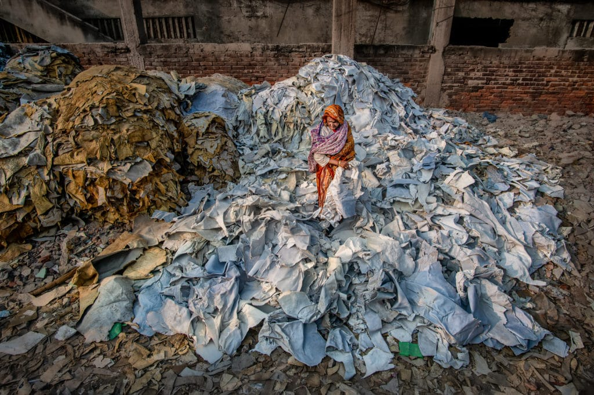
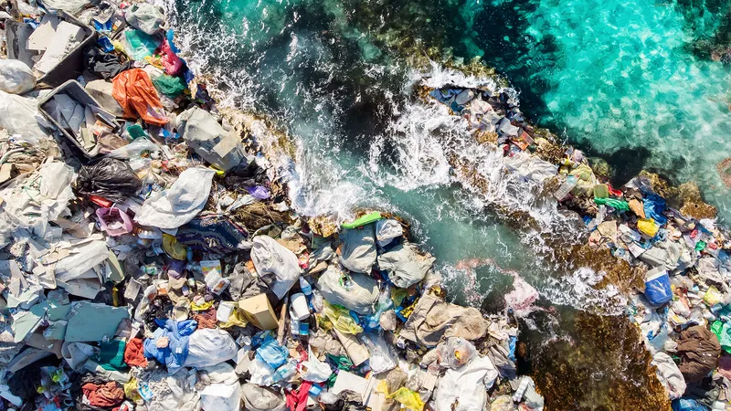

The fast fashion industry has grown exponentially, providing consumers with trendy and affordable clothing at a rapid pace. However, this convenience comes at a significant cost, both to the environment and the people involved in the production process.
The environmental impact of fast fashion is extensive and includes:
Fast fashion contributes to the overconsumption of resources, including water, energy, and raw materials. The production of cheap and disposable clothing places a strain on the planet's finite resources.
Textile dyeing and finishing processes release pollutants into water bodies, leading to water pollution. Harmful chemicals and synthetic fibers further contribute to environmental degradation and negatively impact ecosystems.
The human costs of fast fashion are often hidden but profound:
Low wages, poor working conditions, and exploitation are common in the fast fashion industry. Workers in factories, often located in developing countries, face health risks and unsafe working conditions.
Many garment industry workers are women, and they often face discrimination, gender pay gaps, and sexual harassment. The fast fashion model perpetuates gender inequalities within the workforce.
As consumers, understanding the negative impacts of fast fashion empowers us to make conscious choices. By supporting sustainable and ethical brands, we can contribute to positive change in the fashion industry.
Read More Articles